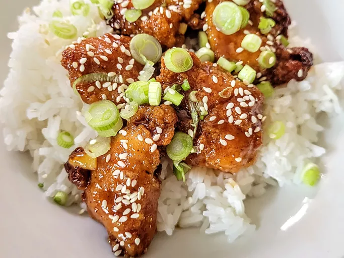

Orange Chicken

Description
Craving Chinese takeout? This orange chicken recipe takes 4 ingredients and 20 minutes and serves 4. Served over rice topped with sesame seeds and green onions makes it the perfect dinner.
Ingredients
- 1 cup orange marmalade
- 1/2 cup Kansas City-style BBQ sauce
- 1/4 cup low sodium soy sauce
- 1 pound frozen fully cooked chicken nuggets
Steps
- Preheat the oven to 400 degrees F (200 degrees C). Place frozen nuggets in a single layer on a baking sheet.
- Bake in the preheated oven until hot and crispy, according to package directions.
- Whisk marmalade, BBQ sauce, and soy sauce together in a small saucepan and heat over low heat until hot, about 5 minutes.
- Place tenders in bowl and toss until chicken nuggets are coated.
- Serve hot, enjoy!
Home